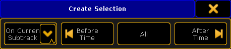

Editing a timecode show opens the Timecode Editor pop-up.
Timecode Show Editor
The editor could look like this:
Timecode Editor pop-up - Graphic style
It has two modes that can be changed using the buttons on the right side. The only difference is in the Main part. Above is the Graphic style. Below is the Text style:
Timecode Editor pop-up - Text style
Title Bar
The left side of the title bar has the standard yellow ball that will open the Options when it is tapped. Continuing from left to right in the title bar, the next ting is the name and number of the timecode show. There is a area that displays the playback status (Stop, Play, Pause, and Record icons) and the current time. If there is a "+" in front of the time then a time offset is added.
There are three buttons that zoom the timeline in the graphic viewer. The first two zoom buttons (from left) is normal zoom in and out. The next button will zoom to view the entire recorded timecode show.
The next "zoom" button is actually a toggle button - this is called Follow Time. When it is active, the display always shows the active cue or time. Like Auto Scroll in a sheet. It moves the the green time marker and line from the left side and into the center of the screen when the show is recording or playing.
The last two buttons in the title bar are the standard buttons for moving the editor to a different screen, and the big X that closes the editor.
Remember that if the editor is on screen 1 then the right side buttons and possibly the bottom buttons can be operated by the U-keys and the X-keys. It is always possible to tap the buttons on the screens.
Right side buttons
As mentioned briefly above, there are two buttons on the right side of the editor that changes the mode of the main part between a Graphic and Text mode.
The Label button opens an Enter Name pop-up that will label the timecode show.
Bottom buttons
At the bottom there are a lot of buttons that allows for editing and controlling the timecode show. They are divided into three sections: Direct Tools, Track Tools, and Playback Controls.
Direct Tools:
Tapping these buttons will add, copy/paste, select and delete events.
Add Here:
Adds an event at the current frame. If there is already an event at this time frame, it will add the event at the next frame. It will not create an event, if there is also something at the next frame. It will automatically add a Goto next cue or insert a marker on the current fader position.
Add Multiple:
This opens the Create Multiple Events pop-up.
Create Multiple Events pop-up
Here you can add more than one event at the same time. Set the Number of Events needed. Set an Interval or an Overall Timespan - they are linked based on the number of events. Finally set first cue for the events. The following cues will be added based on the number of events. If there are not enough cues, then the sequence in wrapped and the cues from the top are used.
Delete Selected:
Deletes all selected events.
Manual Record:
This function is currently not implemented.
Clear Selection:
Pressing this will deselect all selected events.
Create Selection:
This will open the Create Selection pop-up.

Create Selection pop-up
Here you can select multiple events. The left drop down list allows to select if the selection will be made On Current Subtrack, On Selected Tracks, or On All Tracks. The next three buttons allows to select all events Before (and including) the time marker, select All events, or all events After (and including) the time marker.
Copy Events:
Tapping this button will copy the currently selected events. It will copy all events in the selected track if there are no selected events. It is possible to select events from several tracks.
Paste Events:
This button inserts the copied events at the current time marker. If entire tracks have been copied, then it will offset the events and paste them with the 0 frame at the current time marker position. If several tracks are copied, it will paste into the respective new tracks.
Track Tools:
These are buttons that control how tracks are played back and it can be used to manually add or delete tracks.
Activate All Tracks:
This will display all tracks in the Text mode of the editor.
Sort Tracks:
This will allow you to sort tracks in numerical order. Non-active tracks will be moved to the bottom of the list.
Deactivate All Tracks:
This will hide all tracks in the Text mode of the editor (recorded events will be executed).
Track Functions:
Gives you the Track Functions pop-up. There are a lot of track functions. This pop-up opens other pop-ups and can do more complex operations. Please read more about the track functions below.
Playback Controls:
These buttons control the playback and record state of the timecode show.
Rewind (to the beginning):
Rewinds to the 0 (zero) time.
Stop:
Stop the running/playback or recording of the show.
Record:
Records the show from the current time. If the show is rewound and recorded again then it is possible to record more actions into the show. It will not delete what previously recorded.
Pause:
Temporary stops the running time or recording at the current time.
Forward (to the end):
Moves the time marker to the end of the show.
The Track Functions are opened by tapping the Track Functions button. It could look like this:
Track Functions pop-up
There are eight different buttons here:
Expand All Tracks:
This will expand all the sub tracks in the timecode show.
Collapse All Tracks:
This will collapse (hide) all the sub tracks in the timecode show.
Change Executor/Fader:
Pressing this will open a Select executor for existing track pop-up. It could look like this:
Select Executor for Existing Track pop-up
Here one of the existing executors can be selected for the currently selected timecode track.
Lock/Unlock Track:
Pressing this will lock or unlock the main AND sub tracks. Locked tracks get a yellow padlock icon.
Lock/Unlock Sub Track:
Pressing this will lock or unlock only the selected track or sub track. Be aware that a sub track can be locked by both lock buttons. Locked subtracks gets a yellow padlock icon.
Add New Track:
Pressing this will open a Select executor for new track pop-up. It looks exactly the same as the Select executor for existing track pop-up shown above.
Here a track can be selected from the list of executors. The selected executor will be added as a new track to the timecode show.
Add New Sub Track:
Pressing this will open a Select New Sub Track pop-up.
Select New Sub Track pop-up
Here a fader function can be selected to be added as a new sub track to the timecode show.
Delete Current (Sub) Track:
Pressing this will delete the track. If the current track is the main track then it will also delete the sub tracks.
Main part
The main part of the Timecode Editor has a time line at the top. With a green marker displaying the current position. This marker cannot have a minus value - since timecode cannot be a negative value.
On the left side there is a small area displaying the different tracks. There are at least one track that have all the executor actions (key presses and releases). The main track is represented by an area with a dark background. There is the executor number on the top line and the sequence number and name on the next line. Below this there might be subtracks. Subtracks contain fader movement. The executor can be changed using the Track Functions or by pressing the Edit key and then press one of the tracks (or right-click them with the mouse), this will open pop-ups that can be used to select a new executor or subtrack type.
On the far left side next to each main track there are four different symbols. One of them is a small square with a plus or minus. This will expand or collapse the subtracks of the current track. There is also a small square with either a small check mark or it is empty. This will display or hide the track in the Text mode of the editor. Then there is the small "play" icon. If this has a disabled symbol across it, then this track and subtracks will not be executed when the show is played back. The last icon is a "record" icon. If this has en disabled symbol across it, then this track and subtracks will not be changed during a recording. These icons are changed by tapping them.
The rest of the main part is different depending on what mode is selected.
Graphic Mode
In the Graphic mode there are tracks expanding from the areas with the executor numbers and (if expanded) the faders. The events are displayed with different symbols.
Timecode Editor pop-up - Main part Graphics mode
The picture above shows the expanded track. The top row displays some of the different events. The subtrack rows displays the fader movement. All the events can be edited by right clicking them with a mouse.
The green vertical line is the current time. There is one time marker for each timecode show in a network session. If Follow Time is activated (in the title bar) then the last played action in the main track is automatically selected during playback. If the timecode source is the internal source, then the time will be paused if the 4th (right most) encoder is turned and this also moves the position of the last event.
The symbols in the top row differs with the different actions. The number next to some of the symbols is the cue number. There might also be a text, this is the cue name.
Right clicking one of the events opens the Event Command pop-up.
Event Command pop-up
Here it is possible to select a different action for the event.
Important:
Event when the Go key was pressed during the recording then the stored action is actually a Goto action. This is to make sure that the recorded cue is the one being played back.
Text Mode
The text mode changes the main part to something like this:
Timecode Editor pop-up - Main part Text mode
This is the events represented in a spread sheet style. There are 5 columns:
Time:
This is the time for the action or command.
Exec:
This is the name of the sequence and the number of the executor.
Command:
This is the command or action that is performed.
Value:
The value is the cue number or the fader position connected to the command/action.
Timing Overwrite:
A value here will open the Calculator pop-up. It can be used to write a new value that will be used as Fade time for cues actions instead of the otherwise stored time.
It overwrites the stored cue timing. All delays are set to 0 (zero) and individual times are ignored. It affects all cue parts.
Each row is an event in the timecode show. The rows with the light gray background are the events in the selected track. The row with the green background are the selected event. Rows with a darker gray color is events in a not selected track.
The last executed event is automatically selected when the show is running. If the time source is the internal clock and the 4th encoder is turned during playback then the time will automatically pause and the selected event is moved.
Everything that does not have a very dark gray background can be edited. Editing a cell will open a pop-up that can edit the values. For instance editing a value cell that is a cue, will open the Select Cue pop-up. It could look like this:
Select Cue pop-up
Here a different cue can be selected.
The columns can be sorted by tapping the column title and swiping up or down. This will sort the column ascending or descending and is also symbolized with a small arrow pointing up or down.
Timecode Show Options
Tapping the yellow ball in the upper left corner of the Timecode Editor opens the options. The options could look like this:
Timecode Options pop-up
This is a short description of the different options:
Name:
Here the name of the timecode show can be edited.
Slot:
Tapping this field will open the Select Timecode Slot pop-up. Here it can be selected if the time source is internal, linked to the selected slot or fixed to one of the 8 slots. The pop-up looks like this:
Select Timecode Slot pop-up
Length:
The total length of the show.
Offset:
Allows to set a (positive) time offset for the entire timecode show. For instance adding an hour to the entire show without having to move all the events.
Runs:
This is used if the time source is internal. Then the timecode show can be set to loop a number of times or do an endless loop (until stopped manually).
Switch Off:
This has two options: Playback Off or Keep Playbacks. This defines what happens with playbacks (started by the timecode show) when the timecode show is turned off.
Status Call:
When Status Call is turned on, then the timecode show will sync with the timecode signal instantly. When it is off it will execute the action when the event is reached. Example: The timecode show is turned on when the time is between a "Goto Cue 1" and a "Goto Cue 2". With Status call On, a Goto Cue 1 is immediately executed - it is the status the timecode show is suppose to have. When it is Off, it will not run cue 1 but wait till it reaches the "Goto Cue 2" event.
Time unit:
Pressing here opens the Select Time Unit pop-up. It looks like this:
Select Time Unit pop-up
Here the displayed time unit can be selected. The options are: 1/100 Seconds, 30 FPS, 25 FPS, or 24 FPS. This is not depended on the incoming time signal. This is only for the graphic display mode. (FPS = frames per second).
When Ending:
This has two different options: Stop or Pause. This decides what happens when the timecode show runs out of recorded time. This option does not have any effect when using an external time source!
When Stopping:
This has two different options: Do Nothing or Rewind. This decides what should happen when the timecode show is stopped.
Autostart:
This has an On or Off option. Should the timecode show begin automatically when the time source is running. This option is not available when using an internal time source.
User Bits:
Beside the 32 Bit for 8 digit timecode time, timecode executes 32 User bits (8 digit) per frame. User bits can transmit several kinds of information, for example a second timecode stream. So several incoming timecode streams can be discerned. This is not available when using an intern timecode source. Do not change this unless told by the ones supplying the time source.
Info:
Here it is possible to add some info text to timecode show.
The options can be closed by tapping the yellow "X" in the upper right corner.